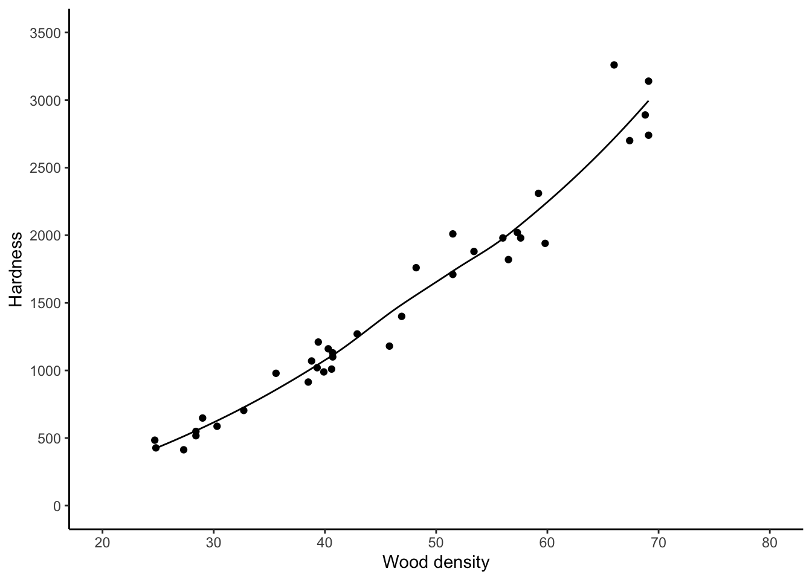
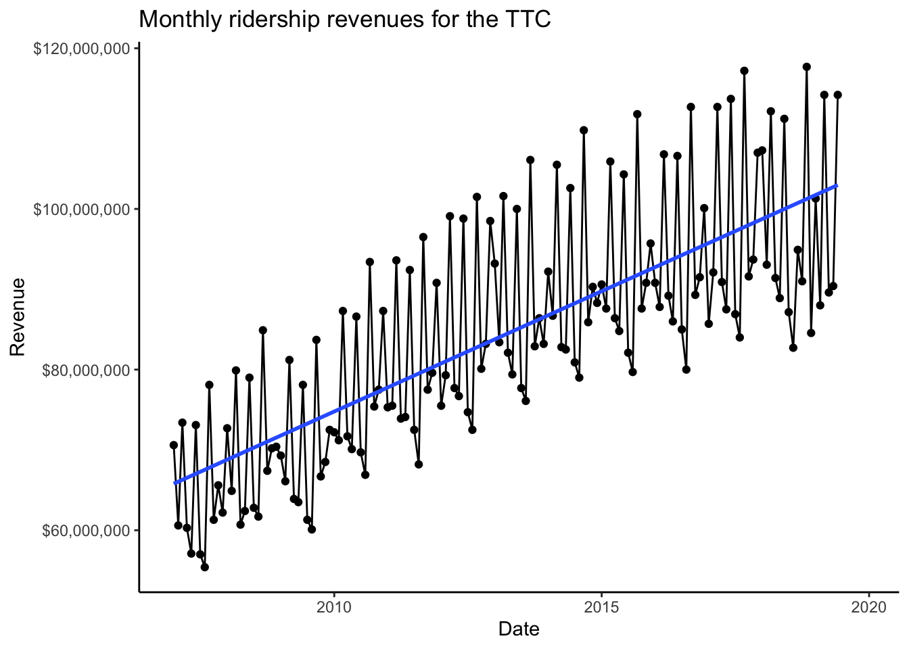

Chapter 4 Statistical Models
This chapter covers statistical models and plotting regression lines (although most of the math of linear regression is left to a later chapter) and unbiased estimators.
We’ll use data from the book A Modern Introduction to Probability and Statistics (MIPS) which can be found here: https://www.tudelft.nl/en/eemcs/the-faculty/departments/applied-mathematics/applied-probability/education/mips/. This will be referred to as “the book data folder”. This chapter corresponds to Chapters 17 and 19 in MIPS.
4.1 Statistical models (Chapter 17)
A statistical model is a probability distribution contructed to enable inferences to be drawn or decisions made from data.
- Statistical Models (2008), A.C. Davison, Cambridge Series in Statistical and Probabilistic Mathematics
Data are realizations of random variables. The probability distribution of these random variables can be used to reason about properties of the universe which are not directly observable. This is called making an inference. These “properties” are usually unknown numbers which we call parameters. So
- Statistical models are probability distributions for observable data,
- which depend on one or more unknown parameters,
- which represent unobservable, unknown properties of the universe,
- that we want to know.
Statistical inference is the science of estimating parameters in statistical models using data.
Example: a drug company wants to know if their new drug leads to different cholesterol levels in peoples’ blood than a placebo. The difference in cholesterol levels in peoples’ blood who take the new drug vs those who take the placebo is a single, unknown, unobservable number, that the drug company would like to know– a parameter. The company gives some people the drug and some people a placebo, and observes each person’s blood cholesterol– data. The drug company then uses these data along with a statistical model to estimate the unknown parameter, that is, the difference in cholesterol levels in peoples’ blood who take the new drug vs those who take the placebo.
Example: astrophysicists want to know the mass of the Milky Way galaxy. It’s really, really heavy (they measure it in units of “the mass of one trillion suns”), so they can’t just go out and measure its weight directly. The mass of the Milky Way is a single, unknown, unobservable number– a parameter. The astrophysicists can measure the position and velocity of stars (actually clusters of stars) which orbit the the Galaxy (data) and they have a statistical model which relates these position and velocity measurements to the mass of the Galaxy. They go out, measure the position and velocities of these star clusters, and use them and this model to estimate the mass of the Milky Way.
4.1.1 Linear Regression
A very common introductory statistical model is Linear Regression. Suppose you have data \(y_{i}\overset{ind}{\sim}\text{N}(\mu_{i},\sigma^{2})\)– normally distributed observations with different means and the same standard deviation. Suppose you have a covariate \(x_{i}\) and you want to see how the mean of \(y_{i}\) depends on \(x_{i}\). Linear regression says that this dependence is \[ \mu_{i} = \beta_{0} + \beta_{1}x_{i} \] where \(\beta_{0}\) and \(\beta_{1}\) are unknown parameters. The data \(y_{i}\) are used to estimate these parameters within this statistical model.
The Janka Hardness dataset contains measurements of the density and hardness of the wood from some trees. It is of interest to who-and-or-whomever took these measurements to relate the average hardness of the wood to its density. So \(y_{i}\) is hardness and \(x_{i}\) is density and we will do inference for the two unknown parameters in the linear regression model.
First read in the data. Print it out on the command line:
## 24.7 484
## 24.8 427
## 27.3 413
## 28.4 517
## 28.4 549
## 29 648
## 30.3 587
## 32.7 704
## 35.6 979
## 38.5 914By printing it out on the command line, you can tell that the file is tab-delimited.
Use readr::read_delim() to read it in:
library(tidyverse)
library(patchwork)
janka <- readr::read_delim(
file = "data/MIPSdata/jankahardness.txt",
delim = "\t",
col_names = c("density","hardness"),
col_types = "nn"
)
glimpse(janka)## Observations: 36
## Variables: 2
## $ density <dbl> 24.7, 24.8, 27.3, 28.4, 28.4, 29.0, 30.3, 32.7, 35.6, 38.5, …
## $ hardness <dbl> 484, 427, 413, 517, 549, 648, 587, 704, 979, 914, 1070, 1020…Create a scatterplot with ggplot2:
jankascatter <- janka %>%
ggplot(aes(x = density,y = hardness)) +
theme_classic() +
geom_point() +
scale_x_continuous(breaks = seq(20,80,by=10)) +
scale_y_continuous(breaks = seq(0,3500,by=500)) +
coord_cartesian(xlim = c(20,80),ylim = c(0,3500)) +
labs(x = "Wood density",
y = "Hardness")
jankascatter
It looks like on average, the hardness of the wood increases linearly with its density. A linear regression model might be appropriate.
To add a line to a plot, use geom_abline():

In a later chapter, you will learn how to calculate the \(-1160.5\) and the \(57.51\)
yourself. But for now, it would still be nice to get the computer to compute these
values for us rather than typing them in manually. We can do this using the
geom_smooth() function in ggplot2:

The “lm” stands for “linear model” and the “se” stands for “standard error”; leaving this at its default of “TRUE” would add error bars to the line. We haven’t learned about error bars yet.
Aside: there are other types of lines you can add with \texttt{geom_smooth}.
The “loess” non-linear regression line is a type of nonlinear regression obtained
by breaking the \(x\) axis up into chunks and then doing linear regression in each
chunk and then joining the resulting lines together.
It roughly stands for “local regression and smoothing
splines”. We can add this using ggplot2 as well:

For these data, this isn’t much different.
4.1.2 Extended example: TTC ridership revenues
Toronto’s population is growing over time. This puts strain on our outdated public transit system. But it should also lead to increased revenues. According to (https://globalnews.ca/news/1670796/how-does-the-ttcs-funding-compare-to-other-transit-agencies/)[a news article from a few years back], the TTC is the least-subsidized major transit agency in North America, which means that its operating budget is the most dependent on fare revenue out of any in all of the US and Canada. Tracking how ridership revenues are changing over time is very important.
The city of Toronto does do this. Go to the City of Toronto Progress Portal and type “TTC” and click on the box that says
“TTC Ridership Revenues” to see a report. You can download the data from here, but
since it’s a bit tricky to describe exactly how, I have put the file
ttc-ridership-revenues.csv in the data folder. We are going to read these data into R
and analyze the relationship between year and revenue.
If you’re thinking “that sounds really easy, we just did that!”… just keep reading.
First, print the data out and count the number of rows on the command line:
## Year,Jan,Feb,Mar,Apr,May,Jun,Jul,Aug,Sep,Oct,Nov,Dec
## 2007 YTD Actual,$70600000,$131200000,$204600000,$264900000,$322000000,$395100000,$452100000,$507500000,$585600000,$646900000,$712500000,$774700000
## 2008 YTD Actual,$72700000,$137600000,$217500000,$278200000,$340600000,$419600000,$482400000,$544100000,$629000000,$696400000,$766600000,$837000000
## 2009 YTD Actual,$69300000,$135400000,$216600000,$280500000,$344000000,$422100000,$483400000,$543500000,$627200000,$693900000,$762400000,$834900000
## 2010 YTD Actual,$72200000,$143400000,$230700000,$302400000,$372500000,$459100000,$528800000,$595700000,$689100000,$764500000,$842000000,$929300000
## 2011 YTD Actual,$75300000,$150800000,$244400000,$318300000,$392400000,$484800000,$557300000,$625500000,$722000000,$799500000,$879100000,$969900000
## 2012 YTD Actual,$75500000,$154800000,$253900000,$331600000,$408300000,$507100000,$581800000,$654300000,$755800000,$835900000,$919100000,$1017600000
## 2013 YTD Actual,$93200000,$176600000,$278200000,$360300000,$439700000,$539700000,$617400000,$693500000,$799600000,$882500000,$968900000,$1052100000
## 2014 YTD Actual,$92200000,$178900000,$284400000,$367200000,$449700000,$552300000,$633200000,$712200000,$822000000,$907900000,$998200000,$1086500000
## 2015 YTD Actual,$90600000,$178200000,$284100000,$370500000,$455300000,$559600000,$641700000,$721400000,$833200000,$920800000,$1011600000,$1107300000
## 14 data/ttc-ridership-revenues.csvYikes! Real data is messy. This data isn’t even that messy and it still seems messy.
We see that the file is comma-separated and has a header. The first column is text and the others are… well, they’re supposed to be numeric, but they are stored in the file with dollar signs. WHY?! This kind of thing is super annoying and super common.
We could remove the dollar signs from the text file directly using sed or a
similar UNIX-based tool, but I prefer whenever possible to keep all my analysis
on one platform. We’ll read it into R as-is and then parse and change datatypes
there:
# Read in the data
ridership <- readr::read_csv(
file = "data/ttc-ridership-revenues.csv",
col_names = TRUE, # Tells readr to read the column names from the first line of the file.
col_types = stringr::str_c(rep("c",13),collapse = "") # Read all 13 columns as "c"haracter
)
glimpse(ridership)## Observations: 13
## Variables: 13
## $ Year <chr> "2007 YTD Actual", "2008 YTD Actual", "2009 YTD Actual", "2010 Y…
## $ Jan <chr> "$70600000", "$72700000", "$69300000", "$72200000", "$75300000",…
## $ Feb <chr> "$131200000", "$137600000", "$135400000", "$143400000", "$150800…
## $ Mar <chr> "$204600000", "$217500000", "$216600000", "$230700000", "$244400…
## $ Apr <chr> "$264900000", "$278200000", "$280500000", "$302400000", "$318300…
## $ May <chr> "$322000000", "$340600000", "$344000000", "$372500000", "$392400…
## $ Jun <chr> "$395100000", "$419600000", "$422100000", "$459100000", "$484800…
## $ Jul <chr> "$452100000", "$482400000", "$483400000", "$528800000", "$557300…
## $ Aug <chr> "$507500000", "$544100000", "$543500000", "$595700000", "$625500…
## $ Sep <chr> "$585600000", "$629000000", "$627200000", "$689100000", "$722000…
## $ Oct <chr> "$646900000", "$696400000", "$693900000", "$764500000", "$799500…
## $ Nov <chr> "$712500000", "$766600000", "$762400000", "$842000000", "$879100…
## $ Dec <chr> "$774700000", "$837000000", "$834900000", "$929300000", "$969900…This does not look like it’s in a form ready to analyze. Some problems:
- The
Yearhas unwanted text in it. We just want the number representing what year it is. - The revenue is stored across 12 columns, one for each month. We want the annual revenue for our analysis.
- The actual numeric revenue is stored as text with a dollar sign. We need to parse out the number part and convert to a numeric datatype before we can analyze it.
- The numbers in the sheet are cumulative revenue for the whole year (“YTD” = “Year To Date”). We want the monthly revenues.
Problems 1 and 3 require a bit of text parsing; Problem 2 requires converting from “wide” to “long” format. Let’s do it:
# PROBLEM 1: Year
# To parse out only the number part, use a regular expression.
# Our string starts with a four digit number which starts with 20. We want to capture this number
# and nothing else.
# The ^ means "the start of the string".
# The [20]{2} means "a 0 or a 2, exactly twice"
# The [0-9]{2} means "anything from 0 - 9, exactly twice"
year_regex <- "^[20]{2}[0-9]{2}"
# Use stringr::str_extract to extract a substring matching the regular expression:
stringr::str_extract("2007 YTD Actual",year_regex)## [1] "2007"# PROBLEM 2: wide to long
# Use the tidyr::pivot_longer() function for gathering columns and putting them
# into one column:
ridership %>%
tidyr::pivot_longer(
Jan:Dec, # Collect columns Jan through Dec, including everything between
names_to = "month", # Create a new column called "month" which contains the names of the old columns
values_to = "revenue" # Create a new column called "revenue" which contains the values of the old columns
)## # A tibble: 156 x 3
## Year month revenue
## <chr> <chr> <chr>
## 1 2007 YTD Actual Jan $70600000
## 2 2007 YTD Actual Feb $131200000
## 3 2007 YTD Actual Mar $204600000
## 4 2007 YTD Actual Apr $264900000
## 5 2007 YTD Actual May $322000000
## 6 2007 YTD Actual Jun $395100000
## 7 2007 YTD Actual Jul $452100000
## 8 2007 YTD Actual Aug $507500000
## 9 2007 YTD Actual Sep $585600000
## 10 2007 YTD Actual Oct $646900000
## # … with 146 more rows# PROBLEM 3: removing the dollar sign
# Again, use text matching. Because $ is itself a special character,
# to match it, you have to "escape" it using a backslash
dollar_regex <- "\\$"
# Remove matching strings using stringr::str_remove()
stringr::str_remove("$1234",dollar_regex)## [1] "1234"# PROBLEM 4: going from cumulative to monthly revenue
# The cumulative revenue for 2007 is:
cumrev2007 <- as.numeric(stringr::str_remove(as.character(ridership[1,-1]),dollar_regex))
cumrev2007## [1] 70600000 131200000 204600000 264900000 322000000 395100000 452100000
## [8] 507500000 585600000 646900000 712500000 774700000## [1] 60600000# Can do this all at once like
c(cumrev2007[1],cumrev2007[2:length(cumrev2007)] - cumrev2007[1:(length(cumrev2007)-1)])## [1] 70600000 60600000 73400000 60300000 57100000 73100000 57000000 55400000
## [9] 78100000 61300000 65600000 62200000## [1] 70600000 60600000 73400000 60300000 57100000 73100000 57000000 55400000
## [9] 78100000 61300000 65600000 62200000# but both those are a bit clumsy, and won't work inside a data processing
# pipeline with grouping. The lag() function in the dplyr package
# is meant for use within a data processing pipeline:
cumrev2007 - lag(cumrev2007,n=1,default = 0)## [1] 70600000 60600000 73400000 60300000 57100000 73100000 57000000 55400000
## [9] 78100000 61300000 65600000 62200000# and will let us do this for all years at once using one line of code below.
# Now, combine all these into one data cleaning pipeline.
# Remember we have monthly revenue, so to get yearly revenue, we sum
# over months.
ridership_clean <- ridership %>%
tidyr::pivot_longer(
Jan:Dec,
names_to = "month",
values_to = "revenue"
) %>%
# "transmute" is like mutate, but it deletes all original columns
mutate(year = stringr::str_extract(Year,year_regex),
revenue = stringr::str_remove(revenue,dollar_regex)) %>%
mutate_at(c("year","revenue"),as.numeric) %>% # Turn both year and revenue into numeric variables
# Compute the monthly revenue, by year
# Grouping by year...
group_by(year) %>%
# ...causes everything in the mutate() to be done separately for each year.
mutate(monthly_revenue = revenue - lag(revenue,n=1,default=0))
glimpse(ridership_clean)## Observations: 156
## Variables: 5
## Groups: year [13]
## $ Year <chr> "2007 YTD Actual", "2007 YTD Actual", "2007 YTD Actua…
## $ month <chr> "Jan", "Feb", "Mar", "Apr", "May", "Jun", "Jul", "Aug…
## $ revenue <dbl> 70600000, 131200000, 204600000, 264900000, 322000000,…
## $ year <dbl> 2007, 2007, 2007, 2007, 2007, 2007, 2007, 2007, 2007,…
## $ monthly_revenue <dbl> 70600000, 60600000, 73400000, 60300000, 57100000, 731…That looks a lot better! As usual, you should run each line of code one by one to understand what is happening.
Because we went to the effort of cleaning the data, we can now plot it. We want to plot the monthly revenue over time. This requires creating a variable that represents time– currently we have two, year and month. We can do this using the function:
# Cumulative revenue
ridershipscattermonthly <- ridership_clean %>%
mutate(date = lubridate::ymd(paste0(year,month,"01"))) %>%
ggplot(aes(x = date,y = monthly_revenue)) +
theme_classic() +
geom_point() +
geom_line() +
labs(title = "Monthly ridership revenues for the TTC",
x = "Date",
y = "Revenue") +
scale_y_continuous(labels = scales::dollar_format()) # Make the y-axis pretty
ridershipscattermonthly## Warning: Removed 6 rows containing missing values (geom_point).## Warning: Removed 6 rows containing missing values (geom_path).I added a line joining the points together to make the pattern clearer.
It looks like monthly revenue is pretty cyclical. Can we add a regression line? Sure!
## Warning: Removed 6 rows containing non-finite values (stat_smooth).## Warning: Removed 6 rows containing missing values (geom_point).## Warning: Removed 6 rows containing missing values (geom_path).
While revenue doesn’t necessarily increase every month, it looks like it is increasing on average.
Exercise: repeate this analysis using annual revenue. You need to create the following dataset:
## Observations: 13
## Variables: 2
## $ year <dbl> 2007, 2008, 2009, 2010, 2011, 2012, 2013, 2014, 2015, …
## $ annual_revenue <dbl> 774700000, 837000000, 834900000, 929300000, 969900000,…by grouping by and then summing , and then make the following plot:
Once the monthly variation is smoothed out, it looks like revenues are increasing over years.
4.2 Unbiased Estimators (Chapter 19)
Much of Statistics involves studying the mathematical properties of estimators. Studying the mathematical properties of estimators lets us reason about how well those estimators should represent the underlying true unknown parameters for any given sample of data, and hence how to reason about how “good” our inferences are.
Unbiasedness is one property of an estimator that may be attractive. Suppose we have a statistical model for random variables \(X_{i}\overset{iid}{\sim}F_{\theta}\) depending on parameter \(\theta\) and we estimate \(\theta\) with an estimator \(\hat{\theta}: \mathbb{R}^{n}\to\mathbb{R}\). The estimator \(\hat{\theta}\) is said to be unbiased if \[ \mathbb{E}\hat{\theta} = \theta \] The expectation is with respect to the probability distribution of \(\hat{\theta}\), which depends on the whole sample \(X_{1},\ldots,X_{n}\) (“sampling distribution”).
On average, over all possible samples, \(\hat{\theta}\) “gets it right”. This is why some people consider the property of unbiasedness to be a desirable property for an estimator.
We can use simulation to get a feel for what unbiasedness means by sampling a bunch of datasets, calculating the estimator for each one, and then calculating the average of those estimators.
4.2.1 Simulated data
Consider samples \(X_{1},\ldots,X_{n}\) of size \(n=30\) from a \(X\sim\text{Poisson}(\lambda)\) distribution with \(\lambda = \log 10\). We want to estimate the parameter \(p_{0}\), which is the probability that \(X = 0\): \[\begin{equation} p_{0} = P(X = 0) = e^{-\lambda} \end{equation}\] where \(\lambda = E(X) = \log 10\) in this example, so \(p_{0} = 0.1\) (this would be unknown for real data!). Let’s look at two estimators: \[ S = (1/n)\times\sum_{i=1}^{n}\mathbb{1}(X_{i} = 0) \] and \[ T = e^{-\bar{X}_{n}} \]
\(S\) corresponds to calculating the sample proportion of times \(X_{i}=0\), and \(T\) corresponds to estimating the population mean \(\lambda\) using the sample mean \(\bar{X}_{n}\) and then plugging this in to the actual formula for the value \(p_{0}\). How we come up with stuff like this will be revealed in later chapters.
Let’s investigate their sampling distributions and (hence) unbiasedness via simulations:
set.seed(6574564)
# Simulate 500 random samples of size 30 from a poisson(log(10))
N <- 500
n <- 30
lambda <- log(10)
p0 <- exp(-lambda) # True value of p0
# Write functions to compute each estimator
compute_S <- function(samp) mean(samp == 0)
compute_T <- function(samp) exp(-mean(samp))
# Simulate the samples and calculate the estimators for each sample
samples <- vector(mode = "list",length = N)
SS <- TT <- numeric(N)
for (i in 1:N) {
samples[[i]] <- rpois(n,lambda)
SS[i] <- compute_S(samples[[i]])
TT[i] <- compute_T(samples[[i]])
}
# Create the plots
plt_S <- tibble(SS = SS) %>%
ggplot(aes(x = SS)) +
theme_classic() +
geom_histogram(colour = "black",fill = "transparent",bins = 7) +
coord_cartesian(ylim = c(0,250)) +
geom_vline(xintercept = p0,colour = "red",linetype = "dotdash")
plt_T <- tibble(TT = TT) %>%
ggplot(aes(x = TT)) +
theme_classic() +
geom_histogram(colour = "black",fill = "transparent",bins = 7) +
coord_cartesian(ylim = c(0,250)) +
geom_vline(xintercept = p0,colour = "red",linetype = "dotdash")
plt_S | plt_T
## [1] 0.1014## [1] 0.1034623Exercise: it turns out that, mathematically, \(S\) is unbiased and \(T\) is biased. Which estimator would you prefer? Compute a five number summary for \(S\) and \(T\) from our simulations, recreating the following (make sure to use the same random seed as me, using :
## Min. 1st Qu. Median Mean 3rd Qu. Max.
## 0.00000 0.06667 0.10000 0.10140 0.13333 0.26667## Min. 1st Qu. Median Mean 3rd Qu. Max.
## 0.03122 0.08209 0.10026 0.10346 0.12246 0.23069Do you see any meaningful differences? Do the sampling distributions of \(S\) and \(T\) concentrate around \(p0\) in the same way?
Now, compute the mode (most frequently-observed value) of \(S\) and \(T\). You should get the following:
## The mode of S is 0.06666667## The mode of T is 0.09697197(You’re going to have to figure out how to compute a mode in R. That’s part of
the exercise).
What do you think about this? Does this contradict \(S\) being unbiased and \(T\) being biased? Does it change your opinion about which is a better estimator?